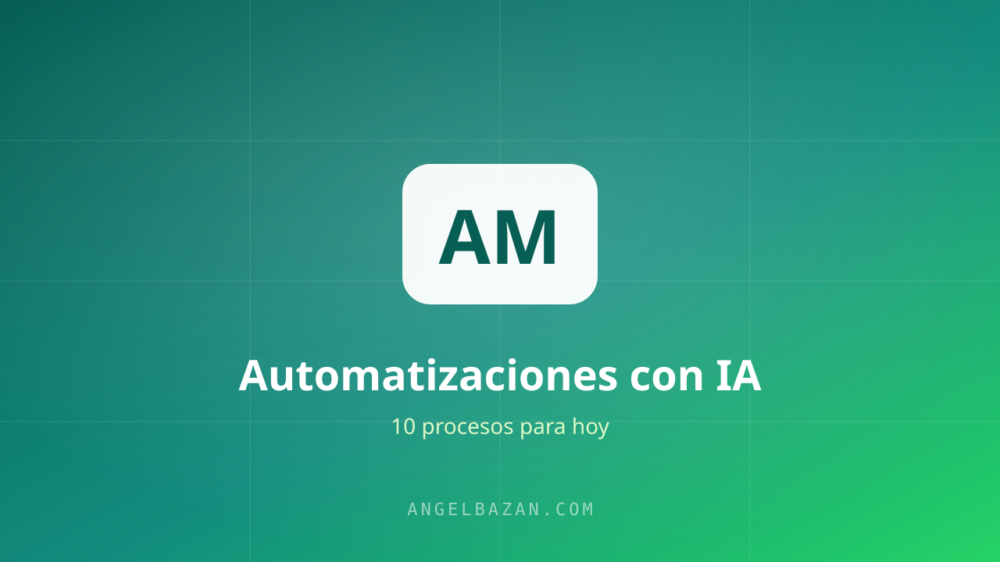

Automatizaciones de marketing con IA: 10 procesos que puedes automatizar hoy
Las 10 automatizaciones de marketing con IA que puedes implementar hoy: leads, WhatsApp, emails, reportes y más.
En este artículo
La automatización con IA no reemplaza tu estrategia: elimina el trabajo repetitivo que te roba horas. Cada proceso de esta lista te devuelve tiempo para lo que de verdad mueve el negocio: las decisiones. Y todas son montables con herramientas sin código.

El principio: automatiza lo repetitivo
La regla: si un proceso se repite más de 3 veces por semana y no requiere tu criterio, merece automatizarse. Empieza por el que más tiempo te cueste — para la mayoría, es el WhatsApp (guía completa aquí).
Automatizaciones de captación (1-5)
- Lead → WhatsApp: el clic de Meta Ads abre el chat con bienvenida automática.
- Calificación de leads: el bot con IA hace las 2-3 preguntas y etiqueta.
- Respaldo por email: cada lead nuevo se registra en tu CRM sin tocar nada.
- Enriquecimiento: la IA agrega datos públicos del lead a su ficha.
- Notificación al equipo: leads calientes avisan al vendedor al instante.
Automatizaciones de conversión (6-10)
- Seguimiento automático: la secuencia de 4 mensajes para los que no responden (genérala aquí).
- Entrega post-compra: pago detectado → producto entregado por WhatsApp.
- Order bump y upsell: la oferta extra llega sola después de la compra.
- Reportes semanales: la IA resume tus métricas de ads y ventas cada lunes.
- Retargeting: quien chateó y no compró entra a la audiencia de recuperación (cómo).
Las herramientas para montarlo
n8n (gratis) o Zapier conectan las piezas; ManyChat o la API de WhatsApp ejecutan los mensajes; y la IA (ChatGPT/Claude) pone la inteligencia. El mapa completo de herramientas está en nuestro stack de IA. Monta primero la número 1 y 6: son las de mayor retorno inmediato.
Errores comunes al automatizar (y cómo evitarlos)
Automatizar mal puede costarte más caro que no automatizar. Estos son los errores que veo con más frecuencia al montar automatizaciones con IA:
- Automatizar un proceso que aún no entiendes: si no sabes qué responde tu vendedor cuando funciona, el bot repetirá sus errores a escala. Primero documenta la conversación ganadora y después la automatizas.
- Enviar más mensajes de los debidos: una secuencia de seguimiento no es una bomba de mensajes. Máximo 3-4 toques en 7 días, cada uno con valor. Un bot insistente convierte el interés en bloqueo.
- Ignorar las métricas de conversación: costo por conversación, tasa de respuesta y objeciones recurrentes son el termómetro de tu automatización. Sin medirlas, mejoras a ciegas.
- Dejar al bot sin supervisión: un error que pasa desapercibido una semana te cuesta clientes. Revisa los chats difíciles a diario y actualiza la base de conocimiento del asistente.
Empieza con las automatizaciones número 1 y 6, que son las de mayor retorno inmediato, y combínalas con el embudo conversacional: el guion del bot lo armas con la herramienta de guiones y la estructura del flujo completo la explico en qué es un embudo de ventas conversacional. Si tu negocio aún no elige canal, mira qué nichos funcionan mejor por WhatsApp.
La regla general: automatiza lo que se repite más de tres veces por semana y no requiere tu criterio. Todo lo demás, déjalo en manos humanas. Así la automatización te devuelve horas sin quitarte el control sobre lo importante.
Mi recomendación final es simple: automatiza en capas. Capa 1, la bienvenida que responde al instante. Capa 2, el seguimiento que recupera al que no respondió. Capa 3, el respaldo de datos a tu CRM. No intentes montar las diez en una semana; cada capa debe funcionar sola antes de sumar la siguiente. Cuando una automatización falla, lo detectas por la métrica: si la tasa de respuesta cae o el costo por conversación sube, el mensaje se desgastó y la base de conocimiento necesita actualización. Ese ciclo de medir y ajustar es el que convierte una automatización promedio en un sistema que vende todos los días sin que estés encima.
Preguntas frecuentes
¿Cuánto cuesta automatizar el marketing con IA?
Puedes empezar con casi cero: n8n es gratis para flujos básicos, ManyChat tiene plan gratuito y la IA de uso moderado cuesta unos pocos dólares al mes. Los costos reales aparecen cuando escalas a miles de conversaciones.
¿La automatización reemplaza a mi equipo de ventas?
No: reemplaza el trabajo repetitivo. Tu equipo se concentra en los leads calientes, las ventas de ticket alto y las decisiones. El bot maneja el 80% repetitivo; el humano, el 20% que paga.
¿Por dónde empiezo si no tengo nada automatizado?
Por el mensaje de bienvenida de WhatsApp con la calificación de leads. Es el proceso que más se repite al día y el que más tiempo te devuelve. Cuando funcione, conecta el seguimiento automático y el respaldo a tu CRM.
Aprende a crear y vender productos digitales con Meta Ads, WhatsApp e IA
Clases en vivo, estrategias y recursos para construir tu sistema desde cero. 🚀
Únete gratis al grupo